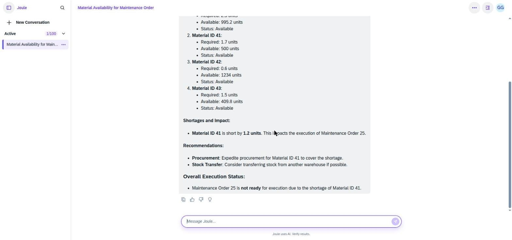
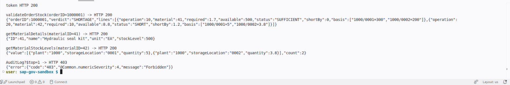
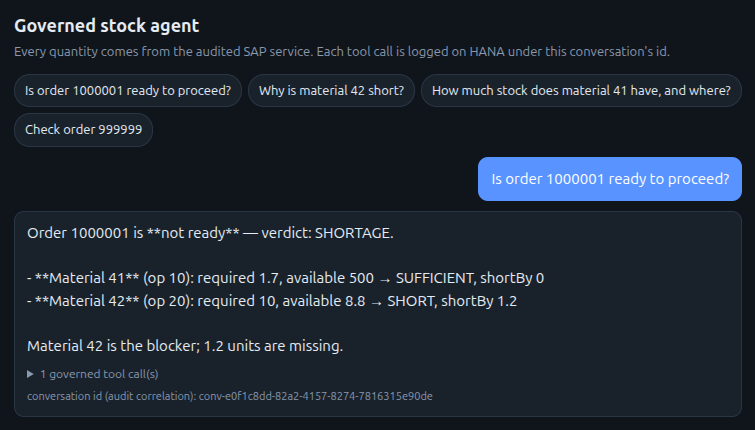
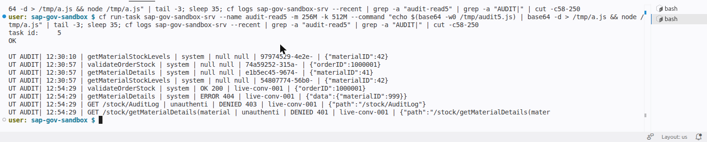

A governed AI agent on SAP BTP
The model understands the question and phrases the answer. It cannot invent the number. Every quantity comes from an audited SAP service, and every call leaves a row on HANA Cloud.
How to read this page. The live app runs on a personal SAP BTP trial account. The HANA Cloud free tier stops every night and the service sits behind SAP login, so it cannot be left open to the public. This page replays recorded output from real runs. Data is sample data. The language model is an external one, and the chat front end is a custom Cloud Foundry app, not an SAP-native one.
Walkthrough video (5 min)
The problem
I asked an agent built the standard way in SAP's Joule Studio whether a maintenance order was ready. The data said material 41 needed 1.7 and had 500 available. The agent still reported a shortage of 1.2, and the debug logs could not show why.

The change
SAP HANA CloudHolds the stock data.
CAP serviceDoes the lookups and all arithmetic in code.
AgentCalls governed tools only. It never calculates.
Audit trailOne row per call with a correlation ID, including failed and unauthorised calls.
Recorded run: order 1000001
The service returns the verdict, the quantities and the stock locations it used. Material 41 is sufficient. Material 42 is short by 1.2.


Every call is traceable

Access control
| Caller | Can do | Cannot do |
|---|---|---|
| Agent scope | Call the six stock tools | Read the audit log |
| Auditor scope | Read the audit log | Call the agent tools |
| No token | Nothing (401) | Everything |
Limits, stated plainly
- Sample data on a trial account, not a production system.
- The language model is outside SAP.
- The chat front end is a custom Cloud Foundry app rather than an SAP-native one.